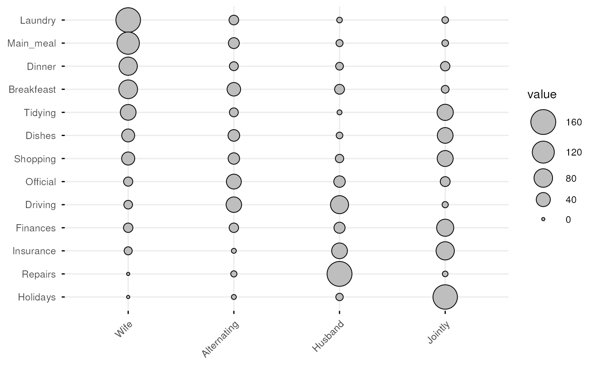
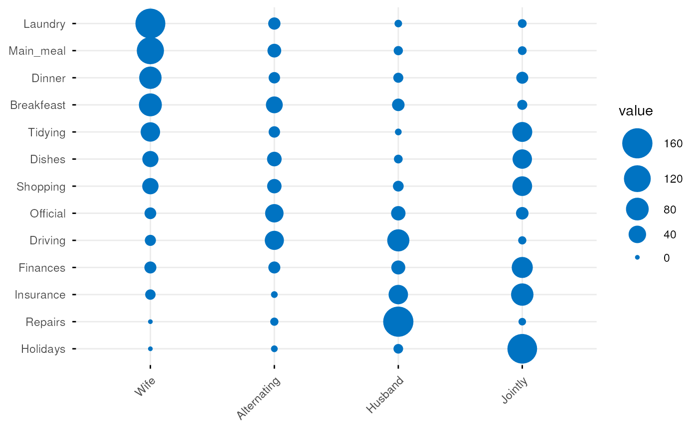
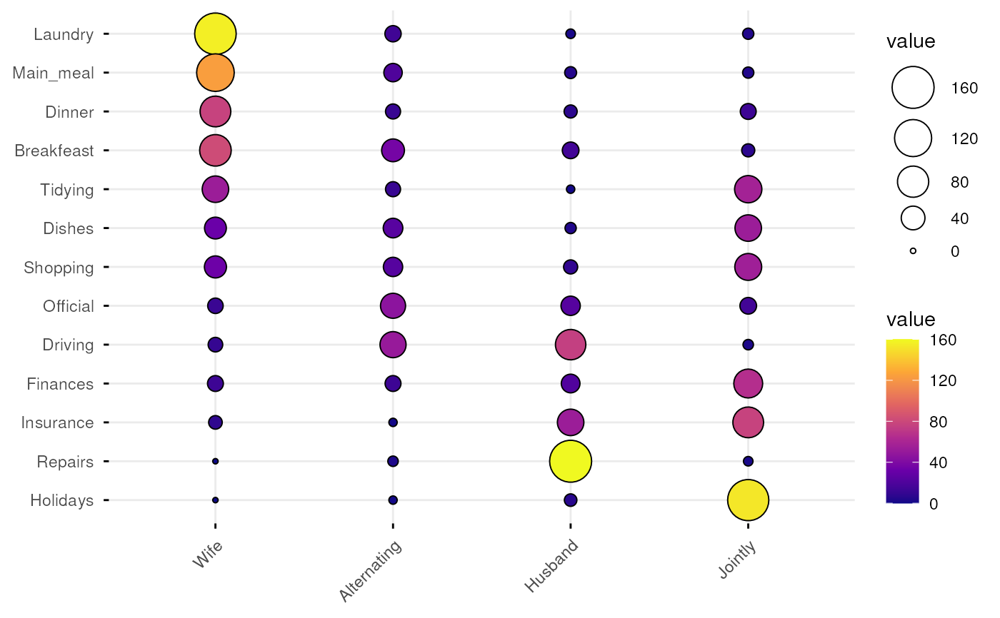
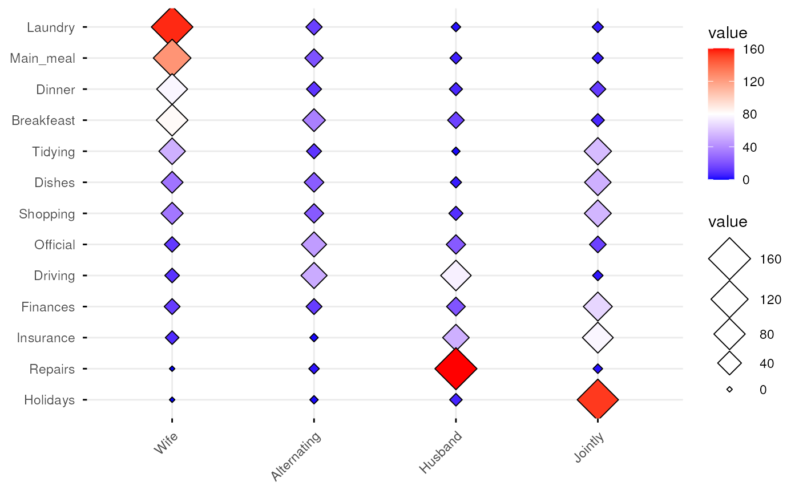
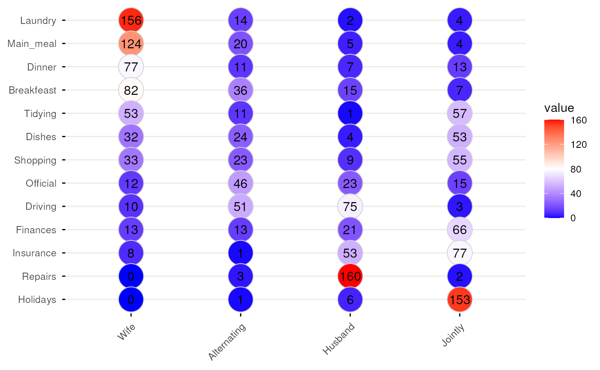
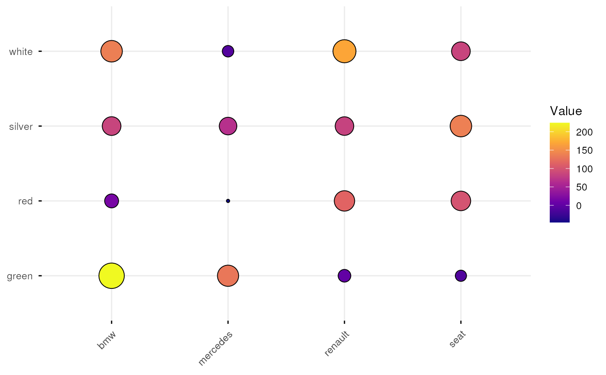
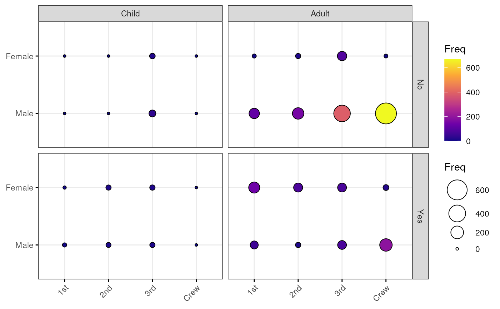

ggballoonplot.RdPlot a graphical matrix where each cell contains a dot whose size reflects the relative magnitude of the corresponding component. Useful to visualize contingency table formed by two categorical variables.
ggballoonplot(data, x = NULL, y = NULL, size = "value", facet.by = NULL, size.range = c(1, 10), shape = 21, color = "black", fill = "gray", show.label = FALSE, font.label = list(size = 12, color = "black"), rotate.x.text = TRUE, ggtheme = theme_minimal(), ...)
| data | a data frame. Can be:
. |
|---|---|
| x, y | the column names specifying, respectively, the first and the second variable forming the contingency table. Required only when the data is a stretched contingency table. |
| size | point size. By default, the points size reflects the relative
magnitude of the value of the corresponding cell ( |
| facet.by | character vector, of length 1 or 2, specifying grouping variables for faceting the plot into multiple panels. Should be in the data. |
| size.range | a numeric vector of length 2 that specifies the minimum and
maximum size of the plotting symbol. Default values are |
| shape | points shape. The default value is 21. Alternaive values include 22, 23, 24, 25. |
| color | point border line color. |
| fill | point fill color. Default is "lightgray". Considered only for points 21 to 25. |
| show.label | logical. If TRUE, show the data cell values as point labels. |
| font.label | a vector of length 3 indicating respectively the size (e.g.: 14), the style (e.g.: "plain", "bold", "italic", "bold.italic") and the color (e.g.: "red") of point labels. For example font.label = c(14, "bold", "red"). To specify only the size and the style, use font.label = c(14, "plain"). |
| rotate.x.text | logica. If TRUE (default), rotate the x axis text. |
| ggtheme | function, ggplot2 theme name. Default value is theme_pubr(). Allowed values include ggplot2 official themes: theme_gray(), theme_bw(), theme_minimal(), theme_classic(), theme_void(), .... |
| ... | other arguments passed to the function |
# Define color palette my_cols <- c("#0D0887FF", "#6A00A8FF", "#B12A90FF", "#E16462FF", "#FCA636FF", "#F0F921FF") # Standard contingency table #::::::::::::::::::::::::::::::::::::::::::::::::::::::::: # Read a contingency table: housetasks # Repartition of 13 housetasks in the couple data <- read.delim( system.file("demo-data/housetasks.txt", package = "ggpubr"), row.names = 1 ) data#> Wife Alternating Husband Jointly #> Laundry 156 14 2 4 #> Main_meal 124 20 5 4 #> Dinner 77 11 7 13 #> Breakfeast 82 36 15 7 #> Tidying 53 11 1 57 #> Dishes 32 24 4 53 #> Shopping 33 23 9 55 #> Official 12 46 23 15 #> Driving 10 51 75 3 #> Finances 13 13 21 66 #> Insurance 8 1 53 77 #> Repairs 0 3 160 2 #> Holidays 0 1 6 153# Basic ballon plot ggballoonplot(data)# Change color and fill ggballoonplot(data, color = "#0073C2FF", fill = "#0073C2FF")# Change color according to the value of table cells ggballoonplot(data, fill = "value")+ scale_fill_gradientn(colors = my_cols)# Change the plotting symbol shape ggballoonplot(data, fill = "value", shape = 23)+ gradient_fill(c("blue", "white", "red"))# Set points size to 8, but change fill color by values # Sow labels ggballoonplot(data, fill = "value", color = "lightgray", size = 10, show.label = TRUE)+ gradient_fill(c("blue", "white", "red"))# Streched contingency table #::::::::::::::::::::::::::::::::::::::::::::::::::::::::: # Create an Example Data Frame Containing Car x Color data carnames <- c("bmw","renault","mercedes","seat") carcolors <- c("red","white","silver","green") datavals <- round(rnorm(16, mean=100, sd=60),1) car_data <- data.frame(Car = rep(carnames,4), Color = rep(carcolors, c(4,4,4,4) ), Value=datavals ) car_data#> Car Color Value #> 1 bmw red 148.0 #> 2 renault red 171.4 #> 3 mercedes red -1.4 #> 4 seat red 174.4 #> 5 bmw white 93.5 #> 6 renault white 93.0 #> 7 mercedes white 111.0 #> 8 seat white 176.8 #> 9 bmw silver -3.6 #> 10 renault silver 201.4 #> 11 mercedes silver 130.2 #> 12 seat silver 251.7 #> 13 bmw green 132.9 #> 14 renault green 114.3 #> 15 mercedes green 37.1 #> 16 seat green 177.7ggballoonplot(car_data, x = "Car", y = "Color", size = "Value", fill = "Value") + scale_fill_gradientn(colors = my_cols) + guides(size = FALSE)# Grouped frequency table #::::::::::::::::::::::::::::::::::::::::::::::::::::::::: data("Titanic") dframe <- as.data.frame(Titanic) head(dframe)#> Class Sex Age Survived Freq #> 1 1st Male Child No 0 #> 2 2nd Male Child No 0 #> 3 3rd Male Child No 35 #> 4 Crew Male Child No 0 #> 5 1st Female Child No 0 #> 6 2nd Female Child No 0ggballoonplot( dframe, x = "Class", y = "Sex", size = "Freq", fill = "Freq", facet.by = c("Survived", "Age"), ggtheme = theme_bw() )+ scale_fill_gradientn(colors = my_cols)# Hair and Eye Color of Statistics Students data(HairEyeColor) ggballoonplot( as.data.frame(HairEyeColor), x = "Hair", y = "Eye", size = "Freq", ggtheme = theme_gray()) %>% facet("Sex")